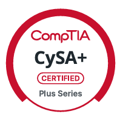
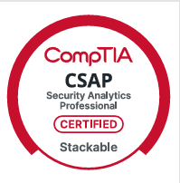

Cyber Security Consultant
Giovanni S. Alves
Especialista em Segurança da Informação com foco em análise, detecção e resposta a incidentes em ambientes multinacionais. Tenho experiência prática identificando falhas críticas, corrigindo gaps de visibilidade em SIEM e conduzindo investigações complexas envolvendo ransomware, possíveis vazamentos, hacktivismo e atividades avançadas de ameaça.
Desenvolvo automações que aprimoram governança e reduzem esforço operacional, incluindo relatórios inteligentes de software non-compliance utilizados pela liderança para tomada de decisão. Atuo diariamente com threat hunting, análise técnica profunda, correlação de eventos e identificação de vulnerabilidades e Shadow IT.
Trabalho orientado a impacto, precisão técnica e fortalecimento contínuo da postura de segurança dos ambientes que protejo.
Credenciais
Certificações

CySA+ Security+
Security+
CSAP CEH Master
CEH Master CEH Practical
CEH Practical CEH
CEH
Áreas de atuação: Incident Response (DFIR) e Threat Hunting.